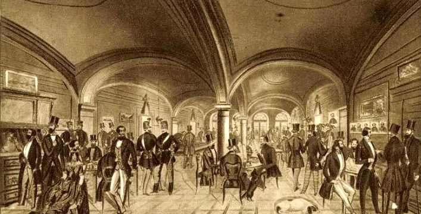
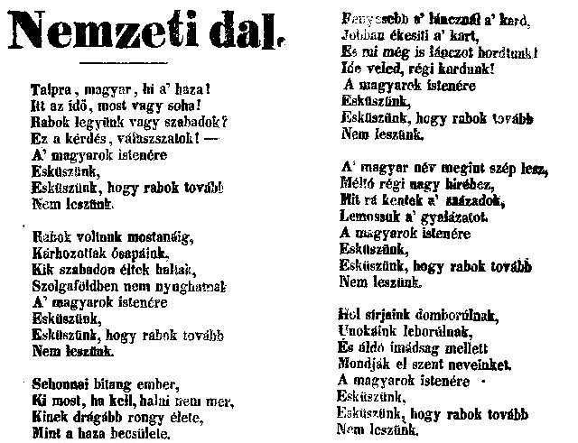
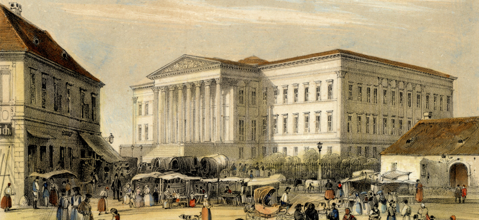

1848 januárjában elindult a forradalmak sora Európában, először az olaszoknál, majd februárban Párizsban, s az események gyors egymásutánban peregtek. A pesti ifjúság ama mozgalmában, amely a pozsonyi országgyűlés tanácskozásainak, a párizsi februári forradalomnak és a bécsi forradalomnak hatása alatt egyre jobban erősödött, Petőfinek vezérszerepe volt. A szabadság, egyenlőség és testvériség eszméi az ő költészetére is hatással voltak, vérmérsékleténél fogva is forradalmi természet volt. Március 13-án megírta a Nemzeti dalt, március 14-én összeállították a 12 pontot. Ezen az estén érkezett meg a bécsi forradalom híre.
1848. március 15. a pesti forradalom és egyszersmind Petőfi napja. „Ezt a napot Petőfi napjának nevezze a magyar nép; mert ezt a napot ő állítá meg az égen, hogy alatta végigküzdhesse a nemzet hosszúra nyúlt harcát szabadsága ellenségeivel” – emlékezett Jókai. Az eredetileg 19-ére tervezett nemzetgyűlést a bécsi forradalom hírére hozták előre március 15-ére.
Ahogy – tévesen – az emlékezet őrzi, Petőfi a Nemzeti Múzeum lépcsőjén – egykorú röplap részlete, nagy valószínűséggel Szerelmey Miklós rajza
A márciusi ifjak vezéreként az események egyik főszereplőjévé vált, a forradalom az ő lakásáról indult: Jókai, Bulyovszky, Vasvári Pál és Petőfi együtt gyalogolt át a Pilvax kávéházba. A 12 pont mellett a Nemzeti dal a népakarat legfontosabb kifejezője, a szabad sajtó első terméke volt. Petőfi a Pilvaxban majd az orvosi egyetem udvarán szavalta el versét, elindítva a lavinát. A Landerer-nyomda előtt már a nyomtatott változatot zúgta utána a tömeg. A délután során a Múzeum előtti népgyűlés, a Városházánál történtek, majd Táncsics Mihály kiszabadítása a forradalom ismert eseményei. Este a színházban Egressy Gábor is elszavalta a Nemzeti dalt.
A nap történéseit éjjel és másnap mind prózában, mind költeményben megörökítette: „E hős ifjúság vezére/voltam e nagy tetteknél” – írta büszkén. „Nagyapáink és apáink, / Míg egy század elhaladt, / Nem tevének annyit mint mink / Huszonnégy óra alatt” – indokolta e büszkeséget. „Petőfi az egyetlen költő, aki egy népforradalmat személyesen vezetett – jegyezte le tettei jelentőségét Fekete.
A Nemzeti dal kinyomtatott példánya
„Petőfi életének utolsó másfél évét mintha csak egy végzetdráma szerzője írta volna: 1848. március 15-étől, a győzelem és a dicsőség tetőpontjától 1849. július 31-éig, a végső segesvári katasztrófáig egyetlen hatalmas ívű zuhanásnak tűnik fel pályája.”
Öt nappal a pesti forradalom után már a következőket jegyezte naplójába: „Az egyetértés, mely eddig kivétel nélkül uralkodott a fővárosban, bomlani kezd.” A márciusi ifjak számukhoz képest jelentős hatást fejtettek ki, mégis csupán közvetve befolyásolhatták a politikát alakító liberális nemességet. Március 15-én mögöttük volt a közvélemény, az ország, ám radikalizmusuk hamarosan elszigetelte őket. Áprilisban így írt a forradalmi fejleményekről:
Petőfi szerepe, költeményének hatása ismétlődött március 16-án is, és a Nemzeti dalt, mintegy a magyar Marseillaise-t rövid idő alatt százezrek ismerték meg. Háromszor fordították németre, majd franciára, hat dallamot is szereztek rá azon melegében, és Petőfi a népszerűség oly magas pontján állt, hogy a pozsonyi országgyűlésen is némi megdöbbenést okozott. Március folyamán a forradalmi események foglalták el, részt vett a polgárság gyűlésein, de utóbb, amikor a felelős minisztérium megalakult, az ifjúság háttérbe szorult. Petőfi francia elméletek hatása alatt a köztársaságért lelkesedett, a királyság eszméje ellen küzdött, és április elején kiadta és népgyűlésen szavalta A királyokhoz című versét. Ez az álláspontja egy időre rontott népszerűségén, de ő naiv optimizmusában tovább haladt útján. Elégedetlen volt a magyar politikusokkal is, radikálisabb, erélyesebb fellépést követelt és kifakadt a minisztérium ellen.
„ Március 16-án az előbbi nap tiszteletére a két főváros kivilágítva, néhány nappal utóbb fáklyás zene Klauzálnak, Nyárinak stb. ... aztán fáklyás zene Wesselényinek, Eötvös Józsefnak stb. ... később Batthyányi, Kossuth, Széchenyi megérkezésekor a két főváros kivilágítva ... tegnap ismét a nádor tiszteletére kivilágítás és mindenféle ceremónia. Mennyi ünnep egy hónap alatt! Vigyázzatok, hogy ezek után a fényes éjek után sötét napok ne következzenek.
Ha vesszük, e férfiak valamennyien megérdemelték a megtiszteltetést, melyben részesültek, de ha meg nem érdemelnék is, csakúgy megtiszteltük volna őket, és ez a szomorító a dologban. Borzasztó vasárnapi nép vagyunk, nekünk mindig ünnep kell, s ha egyszer nem lesz emberünk, a kit megünnepeljünk, majd a holdvilágnak viszünk fáklyás zenét s csinálunk kivilágítást. Talán azért vagyunk olyan rongyosak, mert mindig ragyogni akartunk.